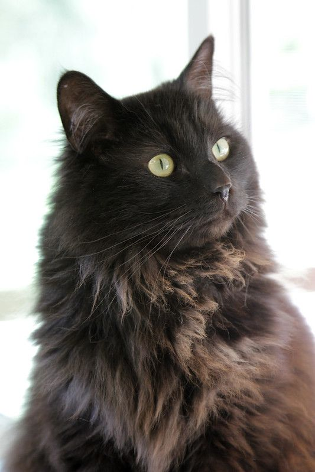

| Fecha publicación | Comuna | Sector | Cantidad | Tipo | Edad | Foto |
|---|---|---|---|---|---|---|
| 2025-08-19 17:00 | Santiago | Parque O'Higgins | 1 | Perro | 2 años | |
| 2025-08-15 10:30 | Estación Central | Persa | 1 | Gato | 1 mes | |
| 2025-08-09 12:00 | Santiago | Beauchef 850, terraza | 4 | Gato | 6 meses | |
| 2025-08-01 7:32 | Quinta Normal | Plaza | 2 | Perro | 2 meses | |
| 2025-07-03 17:52 | Las Condes | Plaza Principal | 1 | Gato | 2 años |  |